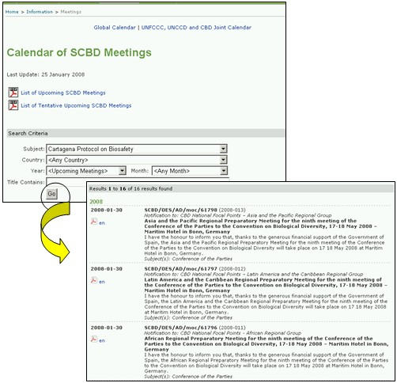

The link to Meetings and Documents takes the user to the Calendar of SCBD Meetings page that provides links to PDF copies of a list of upcoming SCBD meetings and a list of tentative upcoming SCBD meetings. The date of last update of these lists is provided above these links.
The Calendar of SCBD Meetings page also provides a search facility to identify meetings related to specific aspects of the CBD.
If the user selects Cartagena Protocol on Biosafety in the Subject box and clicks on Go, a list of past, confirmed and tentative meetings is provided below the search facility. The table of search results provides links to documents for the meetings, where these are available.
The search for meetings related to the Protocol can be refined by selecting specific search parameters such as the subject of the meeting; the country that hosted or will host the meeting; year; month and words from the title.

Figure 38